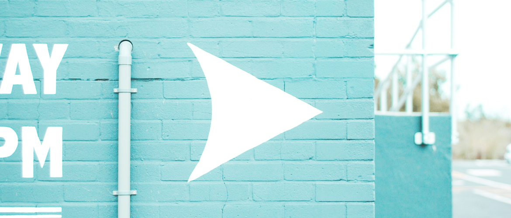

Project Overview
FashHanger is a bespoke sustainable high-fashion accessory company based out of Berlin, currently operated by Siesly and her sister Ashely. They needed help for a big rebrand and wanted to relaunch their website.
Their goals were simple, create a unique e-commerce store that bring a wonderful shopping experience at every stage of the buyer’s journey.